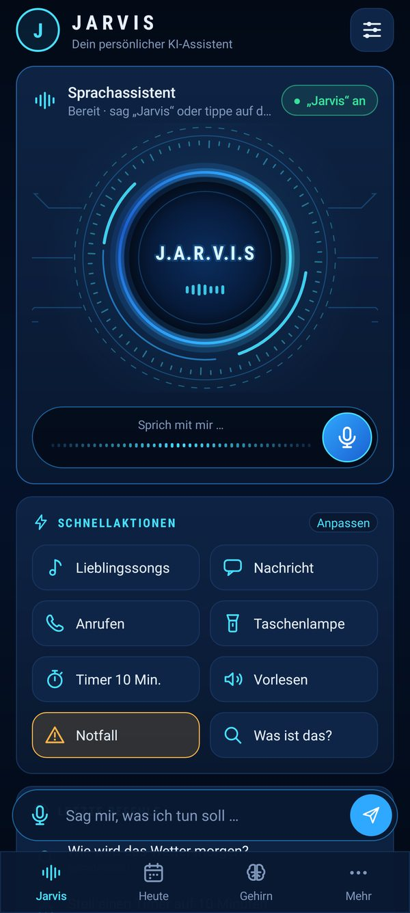
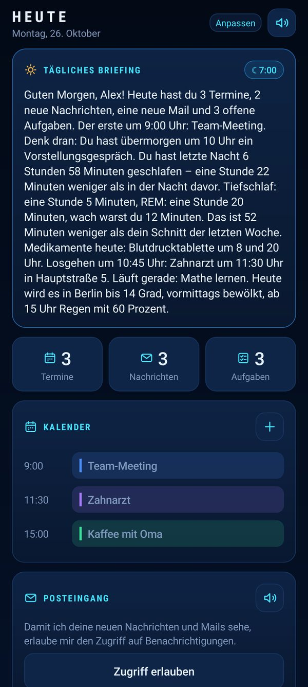
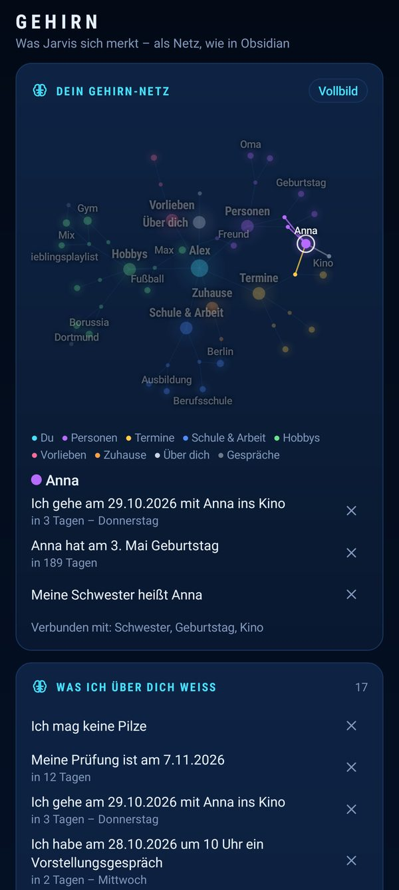

Nachrichten schreiben, anrufen, Musik, Timer, Wetter, Termine, Erinnerungen – mit deiner Stimme. Dein Gedächtnis, deine Nachrichten und deine Schlüssel bleiben auf deinem Handy.
Das gleiche Video läuft beim ersten Start in der App: die vier Seiten, was du einmal einrichten musst, und was Jarvis alles kann. Komplett ohne Sprecher – einfach mitlesen.
Das Video liegt auf dieser Seite, nicht bei YouTube – es werden keine Daten an Dritte übertragen.
„Jarvis, …“ – er reagiert auf seinen Namen, auch wenn das Handy in der Tasche steckt.
WhatsApp, SMS, Mail schreiben und vorlesen lassen. Jarvis nimmt Anrufe an, wenn du nicht kannst – und sagt dir, was der Anrufer wollte.
Spotify-Playlists, Lieblingssongs, nächster Titel – ohne hinzusehen.
„Erinnere mich morgen um 9 an den Zahnarzt“ – auf die Sekunde, auch als Anruf von Jarvis.
Wird es morgen windig? Wie hat Dortmund gespielt? Jarvis sieht selbst nach und nennt die Quelle.
Morgens ein Briefing: Termine, neue Nachrichten, Aufgaben, Schlaf von der Uhr, Schritte. Abends ein kurzer Rückblick.
„Merk dir, dass meine Schwester Anna heißt“ – Jarvis weiß es beim nächsten Mal. Alles sichtbar, alles löschbar, nur auf deinem Handy.
Jarvis läuft auch auf deinem Windows-PC: Programme öffnen, Dateien sortieren, Bildschirm vorlesen – vom Handy aus.
PIN oder Passwort, Fingerabdruck. Nachrichten, Passwörter und Schlafdaten gehen nie in die Cloud.



Wenige, große Kacheln, Schrift sehr groß, kein Kleingedrucktes.
„Erinnere mich jeden Tag um 8 an die Blutdrucktablette.“ Jarvis fragt nach, bis es bestätigt ist.
Ein Tipp – Jarvis ruft die gewählte Person an und schickt ihr den Standort. Fünf Sekunden zum Abbrechen.
Auf Wunsch (im großen Modus automatisch an): „Neue Nummer“, „Konto gesperrt“, Gutschein-Tricks – Jarvis warnt ruhig und sagt, was zu tun ist.
Pausen beim Sprechen sind okay. Er fragt freundlich nochmal und hört weiter zu.
Foto machen – Jarvis liest den Brief vor, erklärt die Packung, übersetzt das Schild.
Jarvis ist eine APK-Datei außerhalb des Play Stores: ein freies Projekt eines einzelnen Entwicklers, ohne Store-Gebühren und ohne Werbung, Tracking oder In-App-Käufe. Android fragt deshalb einmal, ob du Apps aus dieser Quelle erlaubst – das ist normal. GitHub ist dabei nur der Download-Server; der Quellcode der App ist nicht veröffentlicht.
Unten die E-Mail eintragen. Handy: APK antippen, „Installieren“. PC: Jarvis-Setup.exe starten, Weiter, Fertig – beim ersten Mal „Weitere Informationen → Trotzdem ausführen“.
Das Erklärvideo läuft, dann wählst du die Schriftgröße und eine PIN. Nur du kommst an deine Daten.
Mikrofon, Kontakte, Benachrichtigungen – Jarvis erklärt jede selbst, du tippst „Erlauben“.
Für freie Fragen: einen kostenlosen Gemini-Schlüssel bei Google AI Studio holen und eintragen. Nur was du dann der KI sagst, geht an Google – Nachrichten, Kontakte, Gedächtnis, Schlaf- und Schrittdaten bleiben auf dem Handy. Ohne Schlüssel geht trotzdem vieles.
Trag deine E-Mail ein, dann bekommst du beide Downloads – die App fürs Handy und das Programm für den Windows-PC. Wenn du magst, schicken wir dir eine kurze Mail, sobald es eine neue Version gibt. Keine Werbung, jederzeit abbestellbar. Deine Adresse wird dabei nicht gespeichert (Datenschutz); die App sagt dir selbst Bescheid, wenn es eine neue Version gibt.
Android 11 oder neuer (entwickelt und getestet auf Samsung Galaxy) · Windows 10/11, ohne Administratorrechte. Die Dateien liegen auf GitHub, unserem Download-Server – die Knöpfe laden direkt die neueste Datei.
Danke! Hier sind deine Dateien:
⬇ Jarvis für Windows-PC (Setup)
Schritt für Schritt mit Bildern für Samsung, Xiaomi, Pixel, OnePlus & Co. und für Windows: Anleitung öffnen
Handy: APK antippen → „Installieren“. Fragt Android, ob Apps aus dieser Quelle erlaubt sind: einmal erlauben, das ist bei Apps außerhalb des Play Stores normal. Samsung meldet „Unbekannte App gesperrt“? Dann die Automatische Sperre kurz ausschalten (so geht’s). Updates: Jarvis sagt dir Bescheid – neue APK laden und einfach darüber installieren, deine Einstellungen bleiben. Wer sich hier eingetragen hat, bekommt zusätzlich eine kurze Mail.
PC: Jarvis-Setup.exe starten → Weiter → Fertig. Jarvis landet in deinem Benutzerordner, mit Verknüpfung auf dem Desktop – ohne Administratorrechte. Zeigt Windows „Der Computer wurde durch Windows geschützt“: auf Weitere Informationen → Trotzdem ausführen klicken. Der Hinweis kommt, weil Jarvis kein kostenpflichtiges Signatur-Zertifikat hat. Updates: einfach das neue Setup starten, deine Einstellungen bleiben.
Windows 11 sagt „Smart App Control hat eine App blockiert“? Diese Sperre kennt kein „Trotzdem“ – sie lässt nur Programme mit gekauftem Zertifikat zu. Einmalig ausschalten: Start → Windows-Sicherheit → App- & Browsersteuerung → Smart App Control-Einstellungen → Aus, dann das Setup erneut starten. (Lässt sich später nur mit einer Windows-Neuinstallation wieder einschalten; der Virenschutz bleibt davon unberührt.)
Die Verbindung zum Handy wird in der App unter „PC koppeln“ erklärt. Alle Versionen: GitHub Releases